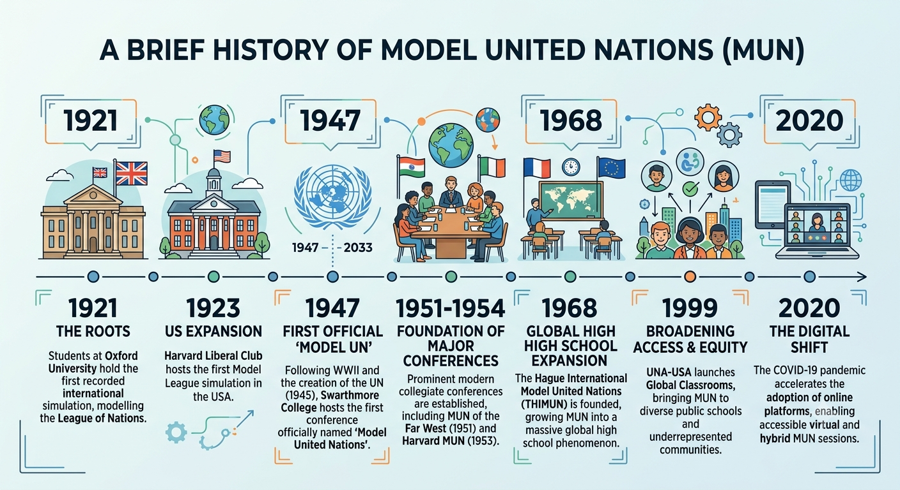
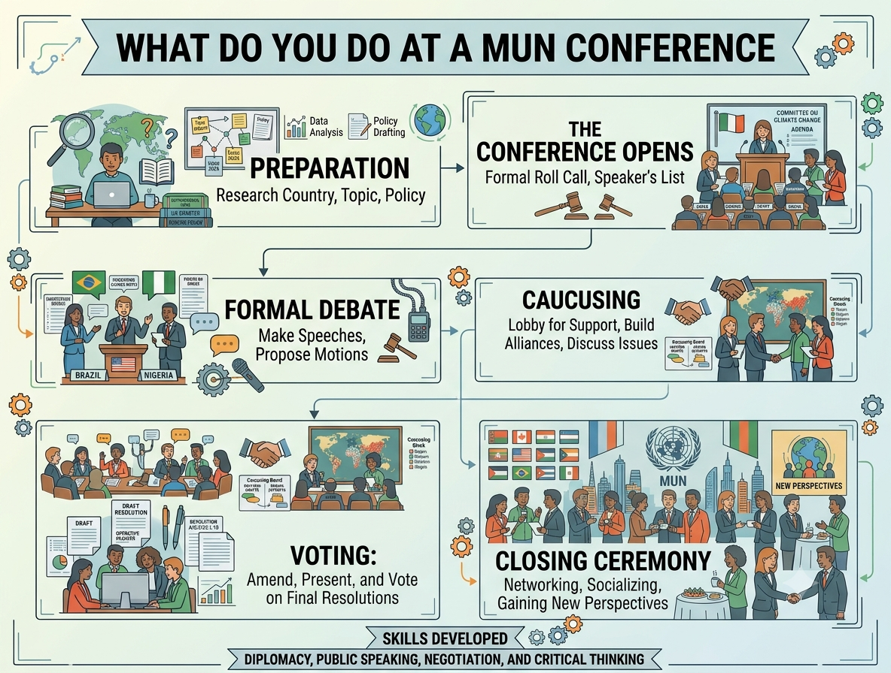
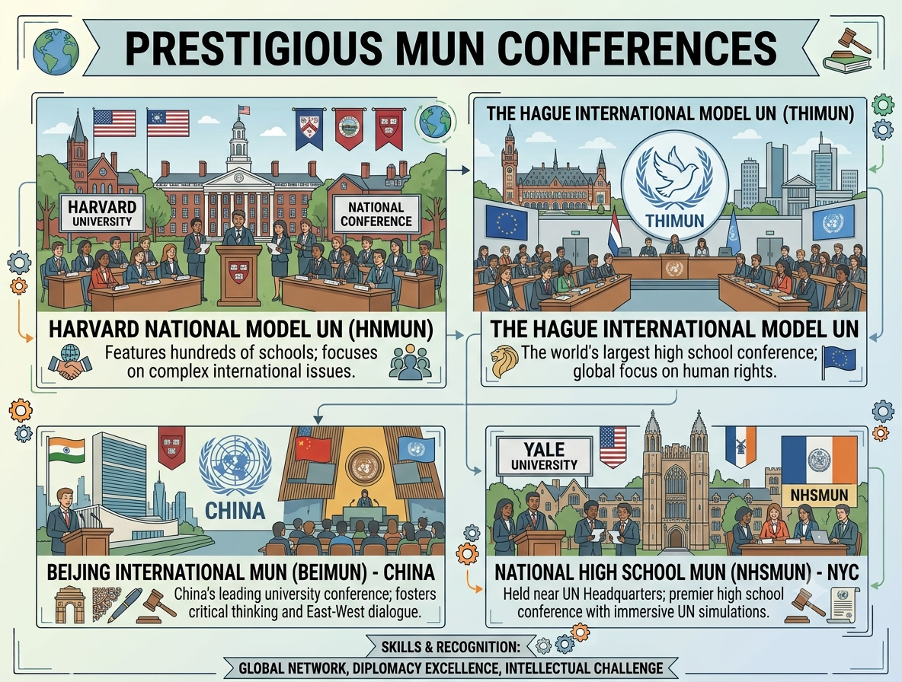

SIMUN
Rules Of Procedure Sample Position Paper Draft Resolution Template Sample Speeches How it Works What is MUN? FAQ ContactSIMUN
Rules Of Procedure Sample Position Paper Draft Resolution Template Sample Speeches How it Works What is MUN? FAQ ContactModel United Nations, commonly known as Model UN or MUN, is a simulation in which students take on the roles of diplomats representing different countries in international organizations such as the United Nations (UN).
Participants research foreign policy positions, engage in formal debate, lobby for alliances, and collaborate on draft resolutions. Students discuss matters of global importance such as security, climate change, and human rights. By stepping into the shoes of decision-makers, students develop essential skills in drafting, negotiation, critical thinking, and international relations.

The first simulation of an international conference took place in 1921 in Oxford, when students simulated the League of Nations. This spread to America and other nations. After the end of World War II and the formation of the UN in 1945, the first real Model UN took place in Swarthmore College in 1947.
The 1950s witnessed the earliest and some of the most prestegious MUNs coming into existence at Harvard and Berkeley. The first Highschool MUNs take place in 1968. In 2020, the first online MUNs emerged.

At a Model UN conference, you step into the shoes of an international representative to tackle real-world global problems. You begin by researching your assigned country's official policies on the topic so you can represent its interests.
Once the session starts, everyone takes turns giving short speeches to share their country's viewpoint and main goals. Next, you move into informal discussions where you talk directly with other representatives, negotiate compromises, and form alliances called 'blocs'.
Together with your bloc, you write up clear, step-by-step proposals called 'resolutions' that offer practical solutions to the issue. Finally, the group reviews, adjusts (through amendments), and votes on these resolutions to decide which solutions get officially approved.

This is a list of some of the most prestegious MUN conferences from around the globe. We have provided the name, the age group, and the country of origin. You can click on the name to visit their homepage.
| Name | Country | Age Group |
|---|---|---|
| NHSMUN | USA | High schoolers |
| LIMUN | UK | University students |
| HMUN India | India | High schoolers |
| SMUN | Singapore | University students |
| THIMUN | Netherlands | High schoolers |
| BEIMUN | China | High schoolers |
At a Model UN conference, as you step into the shoes of an international representatives, there are certain expectations as
Once the session starts, everyone takes turns giving short speeches to share their country's viewpoint and main goals. Next, you move into informal discussions where you talk directly with other representatives, negotiate compromises, and form alliances called 'blocs'.
Together with your bloc, you write up clear, step-by-step proposals called 'resolutions' that offer practical solutions to the issue. Finally, the group reviews, adjusts (through amendments), and votes on these resolutions to decide which solutions get officially approved.
© Copyright Kinara Goyal 2026